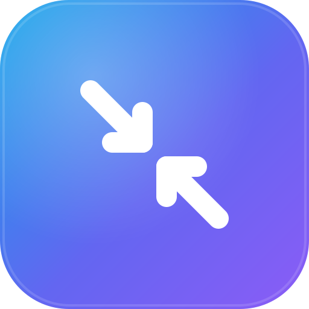

Sizer
Sizer
감시 중 · Watching
✅ 화면기록.mov
✅ 스크린샷.png
화면기록.mov
영상 · VIDEO
333 MB
→
10 MB
97% ↓
정지 구간 자동 제거 · Auto-trim
Sizer 변환 완료 ✅
화면기록_resize.mp4 · 97% 절감
일반
인코딩
트리밍
이미지
드롭 폴더~/Movies/Sizer/drop
코덱 · CodecH.264 · CRF 26
이미지 포맷AVIF
오래된 원본 자동 삭제

Sizer
github.com/KunmyonChoi/sizer
MIT · Open Source
고화질 그대로, 용량은 확 줄이기
Same quality. Tiny size.
macOS 메뉴바에서 영상·이미지 자동 변환
Auto-convert video & images, right from your menu bar
드롭 폴더에 넣기만 하면 끝
Just drop a file in — that's it
정지 구간 자동 제거 + 고효율 인코딩
Trims still parts, compresses smart
폴더·포맷·품질 모두 설정 가능
Folders, formats, quality — all configurable
무료 · 오픈소스
Free & open source